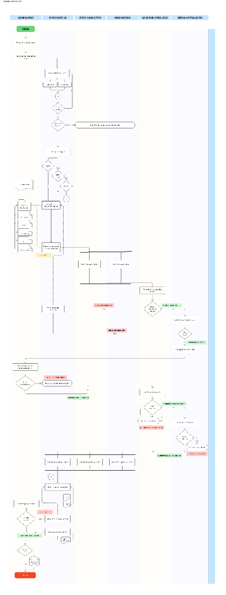

SIMPPM Portal: Research & Community Service Proposal Management System
Dokumentasi portfolio profesional dan detail analisis sistem.
1.1. Gambaran Perusahaan
Latar belakang bisnis tata kelola administrasi penelitian perguruan tinggi.
LPPM Research & Community Service Portal
Lembaga Penelitian dan Pengabdian kepada Masyarakat (LPPM) memegang tanggung jawab mutlak dalam pengelolaan siklus hibah internal perguruan tinggi. Portal SIMPPM dirancang untuk mendigitalisasi proses administrasi proposal pengajuan dana penelitian dosen dan mahasiswa secara transparan. Sistem baru ini mengintegrasikan seluruh pihak terkait secara online guna memastikan tata kelola administrasi riset yang efisien, cepat, dan bebas manipulasi.
Target Efisiensi
7 Hari
Siklus Verifikasi Proposal
Memotong birokrasi manual dari rata-rata 35 hari kerja menjadi di bawah 1 minggu kerja secara online.
1.2. Struktur Organisasi & Peran Kerja
Definisi peran operasional utama yang terlibat dalam siklus proposal.
| Aktor Peran | Tanggung Jawab Teknis | Kebutuhan Antarmuka Sistem |
|---|---|---|
| Admin LPPM | Mengaktifkan periode hibah, melakukan verifikasi administratif akhir, dan melakukan plotting reviewer. | Dashboard monitoring penerimaan, menu plotting reviewer, dan audit log pendaftaran. |
| Dosen Ketua | Menyusun judul riset, membentuk usulan proposal, dan mengundang dosen/mahasiswa anggota. | Formulir isian proposal, menu pencarian NIDN/NIM, dan pengunggahan dokumen PDF. |
| Anggota (Dosen & Mhs) | Melakukan konfirmasi kesediaan bergabung ke dalam proyek riset. | Notifikasi digital dan satu-klik persetujuan (Approve/Reject) undangan di portal. |
| Akademik Fakultas | Melakukan pengecekan kelengkapan administrasi proposal tingkat fakultas. | Daftar antrean proposal fakultas dan checkbox kelayakan format berkas. |
| Dekanat Fakultas | Memberikan rekomendasi strategis kelayakan riset di tingkat fakultas. | Formulir rilis surat rekomendasi elektronik bertanda tangan digital. |
| Reviewer Ahli | Melakukan review substansi akademis proposal secara independen (blind review). | Formulir input nilai kuantitatif dan feedback kualitatif riset secara acak. |
1.3. Analisis Sistem Lama & Tantangan Operasional
Masalah utama alur kerja berbasis kertas fisik (hardcopy) sebelum sistem terintegrasi.
Berkas Rangkap 5
Dosen harus mencetak proposal sebanyak 5 rangkap untuk dikirimkan secara manual ke validator fakultas dan dekan.
Klaim Anggota Sepihak
Pencantuman nama dosen/mahasiswa sebagai anggota riset sering dilakukan sepihak tanpa adanya konfirmasi tertulis.
Plotting Manual Excel
Penunjukan reviewer oleh admin LPPM dilakukan via Excel, rentan terhadap kolusi dan konflik kepentingan (conflict of interest).
Verifikasi Terlambat
Kesalahan format atau kelengkapan berkas baru terdeteksi setelah proposal dinilai reviewer, membuang waktu dan biaya penilaian.
2.1. BPMN Swimlane Alur Pengajuan & Evaluasi Proposal
Visualisasi alur proses bisnis lintas peran dari pembukaan periode hingga penandatanganan kontrak riset.

Model Digital Alur Kerja (Mermaid Flowchart)
2.2. Breakdown Detil Alur Kerja LPPM
Penjelasan langkah-langkah logis operasional lintas peran berdasarkan swimlane diagram.
Inisiasi & Publikasi (Admin LPPM)
Admin LPPM membuka periode pendaftaran hibah tahunan di portal SIMPPM. Sistem mempublikasikan dokumen panduan format riset secara otomatis.
Penyusunan Usulan & Undang Anggota (Dosen Ketua)
Dosen Ketua membuat berkas usulan di portal. Jika riset melibatkan anggota dosen atau mahasiswa, sistem otomatis mengirimkan undangan verifikasi digital.
Konfirmasi Persetujuan Anggota (Dosen Anggota & Mahasiswa)
Anggota wajib melakukan konfirmasi bergabung. Tombol "Submit Proposal" pada layar Dosen Ketua hanya akan aktif (unlock) apabila status persetujuan semua anggota bernilai "Approved".
Verifikasi Kelayakan Format (Akademik & Dekanat Fakultas)
Akademik Fakultas memeriksa format berkas administrasi. Berkas yang lolos diserahkan ke Dekanat untuk mendapatkan surat rekomendasi dekanat. Berkas yang tidak lengkap dikembalikan ke status Draf Dosen Ketua untuk direvisi.
Plotting & Penilaian Independen (Reviewer LPPM)
Admin LPPM melakukan plotting reviewer secara acak menggunakan sub-sistem Subject Area Matching. Dua reviewer secara independen memberikan penilaian numerik di portal. Proposal dengan rata-rata nilai di atas passing grade ditetapkan sebagai "Diterima / Didanai".
3.1. Business Requirements (BRD Overview)
Target bisnis utama dalam digitalisasi sistem hibah riset LPPM.
BR-01: Sistem harus mampu memotong siklus waktu verifikasi dan penilaian dari rata-rata 35 hari kerja menjadi maksimum 7 hari kerja.
BR-02: Sistem wajib menjamin transparansi review dengan mekanisme double-blind scoring, mengeliminasi bias penunjukan reviewer sebesar 100%.
3.2. Functional Requirements
Spesifikasi fungsional portal pengajuan proposal SIMPPM.
| ID Kebutuhan | Deskripsi Spesifikasi Kebutuhan | Prasyarat Validasi (Trigger) | Prioritas |
|---|---|---|---|
| FR-01 | Sistem harus mengunci tombol submit proposal apabila status persetujuan salah satu anggota riset masih 'Pending' atau 'Rejected'. | Database Status Table (Confirmations) | Critical |
| FR-02 | Sistem wajib menolak upload proposal jika file bukan berformat PDF atau ukuran melebihi limit 10MB. | MIME Type File Check API | Critical |
| FR-03 | Sistem otomatis melakukan plotting reviewer secara acak berdasarkan kesesuaian rumpun ilmu (Subject Area Match). | Plotting Reviewer Engine | High |
3.3. Non-Functional Requirements
Persyaratan performa, keamanan, dan ketersediaan sistem portal.
Ketersediaan Sistem
Portal wajib memiliki uptime minimal 99.9% selama periode puncak pengiriman proposal.
Keamanan Berkas
Seluruh berkas proposal yang diunggah wajib dienkripsi menggunakan algoritma standar AES-256.
Integrasi Data
Proses pengecekan NIDN dan NIM terintegrasi API PDDIKTI dengan jaminan integritas data 100%.
3.4. Acceptance Criteria (Gherkin Scenario)
Kriteria pengujian penerimaan sistem untuk persetujuan anggota riset.
Scenario: Percobaan Submit Proposal Tanpa Persetujuan Anggota Lengkap Given Dosen Ketua mengundang 1 Dosen Anggota dan 1 Mahasiswa Anggota And Dosen Anggota mengubah status persetujuan menjadi "Approved" And Mahasiswa Anggota masih berstatus "Pending" When Dosen Ketua membuka halaman review proposal Then Sistem mengunci tombol "Submit Proposal ke Fakultas" And Menampilkan pesan warning "Menunggu Persetujuan dari Anggota Mahasiswa"
4.1. Use Case Diagram
Pemetaan interaksi para aktor terhadap fitur-fitur portal SIMPPM.
4.2. Activity Diagram
Alur logis aktivitas validasi dan seleksi proposal.
4.3. Sequence Diagram
Aliran pesan dalam runtime untuk persetujuan keanggotaan riset.
4.4. Data Flow Diagram (DFD Level 0 - Context)
Aliran pertukaran data eksternal dengan sistem portal SIMPPM.
4.5. Entity Relationship Diagram (ERD Schema)
Struktur relasi database portal untuk mengelola siklus riset dan pengabdian.
5.1. API Documentation (RESTful Endpoints)
Endpoints krusial untuk membuat proposal baru dan persetujuan anggota riset.
1. Endpoint:POST /api/v1/proposal
{
"judul": "Analisis Preprocessing Teks NLP Bahasa Daerah Jawa Timur",
"skema_riset": "HIBAH_INTERNAL_PEMULA",
"anggota_dosen": ["0423108821"],
"anggota_mahasiswa": ["434231055"]
}
2. Endpoint: POST /api/v1/proposal/{id}/confirm-member
{
"user_id": 10293,
"status_persetujuan": "APPROVED"
}
5.2. Validation Rules (Logika Bisnis)
Pengecekan integritas data sebelum didorong ke database sistem.
| Aturan Validasi | Syarat Kriteria Sistem | Pesan Kesalahan (Error Code) |
|---|---|---|
| NIDN/NIM Check | Nomor NIDN/NIM terdaftar aktif di server database PDDIKTI. | USER_NOT_ACTIVE: Pengguna Tidak Aktif / Tidak Terdaftar |
| Conflict of Interest | Reviewer tidak boleh berasal dari program studi yang sama dengan Dosen Ketua. | COI_DETECTED: Reviewer Berasal dari Prodi Pengusul |
| Double Proposal Block | Dosen Ketua hanya boleh mengusulkan maksimal 2 proposal dalam 1 periode aktif. | LIMIT_EXCEEDED: Batas Pengajuan Proposal Terlampaui |
5.3. Role & RACI Access Control Matrix
Manajemen hak akses berdasarkan peran pengguna akhir (RBAC).
| Fitur / Layanan | Dosen Ketua | Akademik | Dekan | Reviewer | Admin LPPM |
|---|---|---|---|---|---|
| Create & Edit Proposal | Full Access | - | - | - | Read |
| Rilis Rekomendasi Dekan | - | Read | Approve | - | - |
| Plotting Reviewer acak | - | - | - | - | Full Access |
| Input Nilai Evaluasi | - | - | - | Approve | - |
5.4. Exception Flow (SLA Breach Mitigation)
Mitigasi keterlambatan proses penilaian oleh reviewer.
Kebijakan Reviewer Timeout (SLA 7 Hari):
Apabila reviewer yang di-plot tidak memasukkan nilai evaluasi dalam batas waktu 7 hari kerja, sistem otomatis mengirimkan notifikasi penarikan tugas. Engine Plotting LPPM akan langsung berjalan untuk merekrut reviewer cadangan (Backup Reviewer) secara otomatis tanpa intervensi manual admin.
6.1. UAT Test Plan
Uji kelayakan sistem untuk validasi persetujuan anggota.
| ID Uji | Target Fitur Uji | Langkah Percobaan | Hasil yang Diharapkan | Status |
|---|---|---|---|---|
| UAT-L01 | Bypass Submit Block | Lakukan klik tombol submit saat ada anggota berstatus 'Pending'. | Sistem mengunci tombol submit dan menampilkan tooltip peringatan. | Passed |
| UAT-L02 | Double-Blind Integrity | Buka halaman input nilai pada akun Reviewer 1. | Nama pengusul dan instansi disamarkan (sensor), hanya menampilkan dokumen proposal tanpa identitas. | Passed |
6.2. Requirements Traceability Matrix (RTM)
Pemetaan dari kebutuhan fungsional hingga rencana kasus uji UAT.
| ID Kebutuhan Bisnis | ID Fungsional (FR) | Skenario Kasus Uji | Modul Evaluasi |
|---|---|---|---|
| BR-01 (SLA Reduction) | FR-03 (Automated Plotting Engine) | UAT-L03 (Auto-Assign review) | Plotting Reviewer Cluster |
| BR-02 (Anti-Bias Scoring) | FR-01 (Double-Blind Privacy Filter) | UAT-L02 (Double-Blind Integrity) | Review & Grading Module |
6.3. Risk Register
Potensi hambatan kelancaran rilis sistem dan rencana rencana mitigasi.
| Deskripsi Risiko | Level Risiko | Dampak Operasional | Rencana Tindakan Mitigasi |
|---|---|---|---|
| Downtime API PDDIKTI saat validasi mahasiswa | Sedang | Staf tidak dapat memvalidasi NIM mahasiswa secara real-time. | Gunakan caching data mahasiswa lokal yang disinkronisasi berkala di malam hari. |
| Beban server saat overload upload PDF | Tinggi | Server melambat akibat upload ratusan berkas proposal berukuran besar secara serentak. | Implementasikan CDN dan upload buffer file langsung ke cloud storage (seperti AWS S3/Cloud Storage) dengan throttling limit. |
7.1. Business Impact & ROI Metrics
Dampak riil transformasi digital terhadap pengelolaan riset LPPM.
SLA Verifikasi Riset
-80%
Cycle Time Pengajuan
Memangkas alur verifikasi berkas dari 35 hari kerja menjadi kurang dari 7 hari.
Penyelamatan Anggaran (Review)
100%
Double-Blind Compliance
Menghilangkan potensi konflik kepentingan reviewer secara total melalui sistem blind plotting.
Paperless Savings
98%
Efisiensi Cetak Berkas
Menghilangkan pencetakan proposal rangkap 5 secara fisik ke format digital PDF.